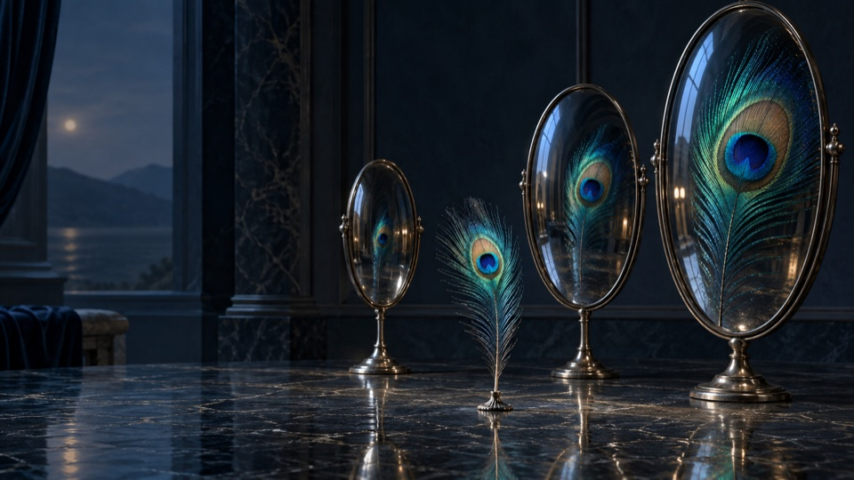

01 · Madde ve MânâTaşa bakınca içindeki ışığı da görebiliyor musun?Nöroterbiye · Madde ve Mana · s. 21Telefon için indir ↓ · Bilgisayar için indir ↓
02 · Parçadan BütüneParçalar birleşince gördüğün şey nasıl değişiyor?Nöroterbiye · Bütün ve Parça · s. 22Telefon için indir ↓ · Bilgisayar için indir ↓
03 · Her Şey YerindeKuvvetlerin her biri yerini bulsa ne olur?Nöroterbiye · Adalet? · s. 25Telefon için indir ↓ · Bilgisayar için indir ↓
04 · İki YolKolay görünen yol seni nereye götürüyor?Nöroterbiye · İkili Sistem · s. 26Telefon için indir ↓ · Bilgisayar için indir ↓
05 · Kaptan KöşküDümenin başında kim var?Nöroterbiye · Gemi · s. 27Telefon için indir ↓ · Bilgisayar için indir ↓
06 · Canlı Ağİçinde işleyen düzeni ne kadar tanıyorsun?Nöroterbiye · Nefsin Biyolojisi · s. 29Telefon için indir ↓ · Bilgisayar için indir ↓
07 · Ufuktaki MeyveAradığın meyve mi, ona ulaşma heyecanı mı?Nöroterbiye · Şehvet · s. 33Telefon için indir ↓ · Bilgisayar için indir ↓
08 · Yansımanın CazibesiKendi kıymetini hangi yansımada arıyorsun?Nöroterbiye · Şöhret · s. 36Telefon için indir ↓ · Bilgisayar için indir ↓
09 · Ateşin Yeriİçindeki ateş neyi koruyor?Nöroterbiye · Gadab · s. 38Telefon için indir ↓ · Bilgisayar için indir ↓
10 · Beklentinin TerazisiAynı şey neden bazen çok, bazen az gelir?Nöroterbiye · Ödül ve Ceza · s. 44Telefon için indir ↓ · Bilgisayar için indir ↓
11 · Açlığın AynasıBedenin mi istiyor, canın mı sıkılıyor?Nöroterbiye · Hedonik Açlık · s. 62Telefon için indir ↓ · Bilgisayar için indir ↓
12 · Ekranın ÇekimiIşığı sen mi seçtin, ışık mı seni çağırdı?Nöroterbiye · Ekran · s. 68Telefon için indir ↓ · Bilgisayar için indir ↓
13 · Parlak AmbalajParlayan şeyin içinde ne var?Nöroterbiye · Reklamlar · s. 69Telefon için indir ↓ · Bilgisayar için indir ↓
14 · Sonsuz AynalarKaç yansımadan sonra kendini kaybedersin?Nöroterbiye · Sosyal Medya · s. 76Telefon için indir ↓ · Bilgisayar için indir ↓
15 · Bir Tur DahaYol ilerliyor mu, seni aynı yere mi getiriyor?Nöroterbiye · Oyun · s. 79Telefon için indir ↓ · Bilgisayar için indir ↓
16 · Üçüncü Vadiİki vadi doluyken gözün neden üçüncüde?Nöroterbiye · Doyumsuzluk Döngüsü · s. 87Telefon için indir ↓ · Bilgisayar için indir ↓
17 · Beklenen NotaBeklediğin ses mi, bildiğin dönüş mü?Nöroterbiye · Müzik · s. 90Telefon için indir ↓ · Bilgisayar için indir ↓
18 · Döngüden ÇıkışAynı dönüşte bir çıkış fark ettin mi?Nöroterbiye · Bağımlılık Döngüsü · s. 95Telefon için indir ↓ · Bilgisayar için indir ↓
19 · Sözün DağılışıDağılanı yeniden toplayabilir misin?Nöroterbiye · Gıybetin Faydaları(!) · s. 115Telefon için indir ↓ · Bilgisayar için indir ↓
20 · Yükseklik ve KökYükselirken neye dayandığını hatırlıyor musun?Nöroterbiye · Kibir; Ucb · s. 117Telefon için indir ↓ · Bilgisayar için indir ↓
21 · Aynı BahçedeAynı ışıkta neden farklı büyüyoruz?Nöroterbiye · Mizaç ve Kimya · s. 121Telefon için indir ↓ · Bilgisayar için indir ↓
22 · Biriken İzlerBugünkü biçiminde hangi eski izler var?Nöroterbiye · Nefsimiz Nasıl Bu Hale Geldi? · s. 125Telefon için indir ↓ · Bilgisayar için indir ↓
23 · İlk Pınarİçindeki ilk kaynağa nasıl bir yol açtın?Nöroterbiye · Fıtri Nefs · s. 132Telefon için indir ↓ · Bilgisayar için indir ↓
24 · Küçük Adımın UfkuUzak bir hedefi küçük bir adım kadar yakınlaştırabilir misin?Nöroterbiye · Çocuk Nefsi · s. 153Telefon için indir ↓ · Bilgisayar için indir ↓
25 · Şefkatin SınırıHem koruyan hem büyümeye yer bırakan sınır nasıl olur?Nöroterbiye · Ebeveynlik Çeşitleri · s. 155Telefon için indir ↓ · Bilgisayar için indir ↓
26 · Yapımı Süren KuleTamamlanmakta olan bir kuleye ne kadar ufuk gerekir?Nöroterbiye · Genç Nefsi · s. 164Telefon için indir ↓ · Bilgisayar için indir ↓
27 · Kendine Açılan KapıKendi içinde hangi kapıyı henüz açmadın?Nöroterbiye · Kimsin Sen? · s. 171Telefon için indir ↓ · Bilgisayar için indir ↓
28 · Duruya DoğruAynı su nasıl duruluyor?Nöroterbiye · Nefsin Nöromertebeleri · s. 173Telefon için indir ↓ · Bilgisayar için indir ↓
29 · Taşın İçindenDeğişimin ilk işaretini görebiliyor musun?Nöroterbiye · İnan! Yoksa Boşuna Uğraşmayalım! · s. 185Telefon için indir ↓ · Bilgisayar için indir ↓
30 · Işığa DönenNeye yöneliyorsan onu büyütüyor olabilir misin?Nöroterbiye · Kendini Gerçekleştiren Kehanet · s. 190Telefon için indir ↓ · Bilgisayar için indir ↓
31 · Küçük Kanadın DalgasıKüçücük bir başlangıç neye dönüşebilir?Nöroterbiye · Kelebek Etkisi · s. 193Telefon için indir ↓ · Bilgisayar için indir ↓
32 · Bugünün DamlasıŞimdi elinde kalan tek damla neyi besleyecek?Nöroterbiye · Bugüne Odaklan · s. 196Telefon için indir ↓ · Bilgisayar için indir ↓
33 · Dağı ParçalamakDağın tamamı yerine ilk taşı kaldırabilir misin?Nöroterbiye · Savsaklama · s. 197Telefon için indir ↓ · Bilgisayar için indir ↓
34 · Boşluğun DavetiBoşluğu hemen doldurmasan ne belirir?Nöroterbiye · Can Sıkıntısına İzin Ver · s. 200Telefon için indir ↓ · Bilgisayar için indir ↓
35 · Alarmın SöylediğiBu uyarı hangi kıymetini korumaya çalışıyor?Nöroterbiye · Stresin Faydaları · s. 205Telefon için indir ↓ · Bilgisayar için indir ↓
36 · Bedenin BahçesiBeslediğin şey yalnız açlığın mı?Nöroterbiye · Sıhhat İçin Ye! · s. 213Telefon için indir ↓ · Bilgisayar için indir ↓
37 · Hareketle AçılanBir adım zihninde hangi yolu açar?Nöroterbiye · Nerede Hareket Orada Bereket · s. 222Telefon için indir ↓ · Bilgisayar için indir ↓
38 · Gecenin BahçıvanıSen dinlenirken hangi dağınıklık duruluyor?Nöroterbiye · Yattığın Yerden Kazanmanın Sırrı · s. 226Telefon için indir ↓ · Bilgisayar için indir ↓
39 · Kuvvetini KoruKendini zorlamanın yanında kendine yer açıyor musun?Nöroterbiye · İradeyi İdare Et · s. 230Telefon için indir ↓ · Bilgisayar için indir ↓
40 · Elin BildiğiBildiğin şey hangi hareketinle iz bırakıyor?Nöroterbiye · Amel, Amel, Amel · s. 232Telefon için indir ↓ · Bilgisayar için indir ↓
41 · Yeni Bir MecraEski yol kapanınca kuvvetin nereye akacak?Nöroterbiye · Alternatifini İkame Et · s. 236Telefon için indir ↓ · Bilgisayar için indir ↓
42 · KararındaNe zaman dolmak taşmaya dönüşür?Nöroterbiye · Azı Karar Çoğu Zarar · s. 240Telefon için indir ↓ · Bilgisayar için indir ↓
43 · Çevrenin RüzgârıSeni her gün hangi rüzgâr biçimlendiriyor?Nöroterbiye · Çevre · s. 243Telefon için indir ↓ · Bilgisayar için indir ↓
44 · Fırtınadan ÖnceSakin zamanda hangi bağı sağlamlaştıracaksın?Nöroterbiye · Kuvvetli Zamanlar · s. 249Telefon için indir ↓ · Bilgisayar için indir ↓
45 · Dipten YukarıEn aşağıdaki adım da yukarı açılabilir mi?Nöroterbiye · Dipten Dönmek · s. 251Telefon için indir ↓ · Bilgisayar için indir ↓
46 · Yan YanaYanındaki ışık yolunu nasıl değiştiriyor?Nöroterbiye · Bana Arkadaşını Söyle Sana… · s. 252Telefon için indir ↓ · Bilgisayar için indir ↓
47 · Halkanın ÖtesiSenin temasın kaç halka uzağa ulaşır?Nöroterbiye · Arkadaşının Arkadaşı · s. 255Telefon için indir ↓ · Bilgisayar için indir ↓
48 · İz BırakanHangi izin peşinden yürümek istersin?Nöroterbiye · İlham Verenler · s. 256Telefon için indir ↓ · Bilgisayar için indir ↓
49 · Aynı Sofranın IşığıBirlikte kurulan sofranın ışığı ne kadar sürer?Nöroterbiye · Nerede O Eski Ramazanlar · s. 259Telefon için indir ↓ · Bilgisayar için indir ↓
50 · Her Gün Bir AdımBugün hangi küçük izi bırakacaksın?Nöroterbiye · Hayata Geçir ve Devam Et · s. 265Telefon için indir ↓ · Bilgisayar için indir ↓